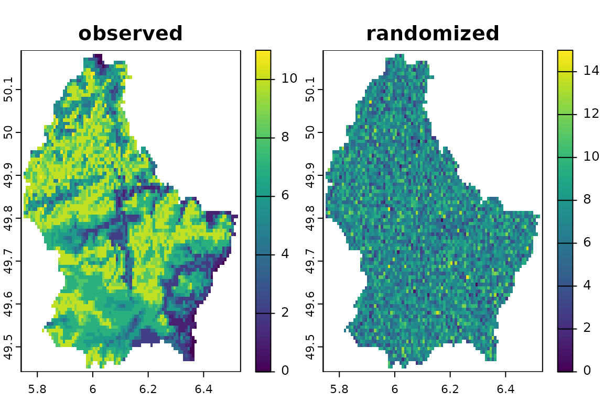
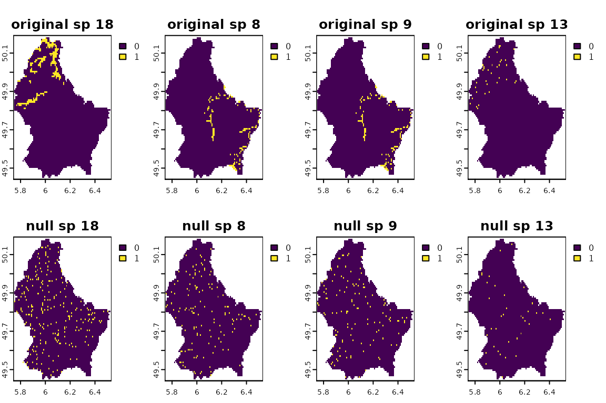
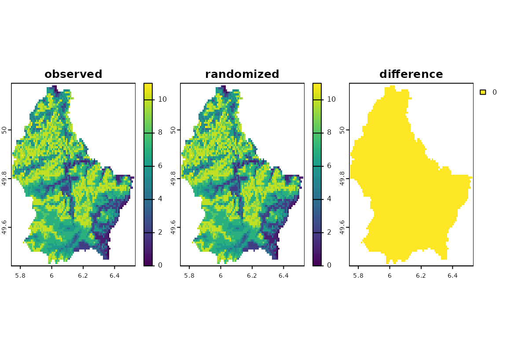

Spatial null model algorithms in SESraster
Neander M. Heming, Flávio Mota, and Gabriela Alves-Ferreira
2023-07-25
Source:vignettes/spatial-null-models.Rmd
spatial-null-models.RmdContents
After an overview of the null model algorithms forspecies
co-occurrence analysis in vignette("null-models"), let’s
see how the randomization algorithms implemented in
SESraster behave for spatial data.
Installation
Install from CRAN:
install.packages("SESraster")The development version of SESraster can be installed
from the SESraster
repository in Github:
Analysis
The SESraster package implements functions to randomize
presence/absence species distribution raster data with or without
including spatial structure for calculating Standardized Effect Sizes
(SES) necessary for null hypothesis testing. The function
bootspat_naive() does not retain the spatial structure of
community richness and species distribution size at the same time. It
randomizes a raster stack according to the observed frequency of
presences for each species (layer) using any of the following methods:
sites (raster cells), species (raster layers) or both (layers and
cells). This, randomization without retaining spatial structure of data,
is the most commonly used method of randomization for community data.
The function bootspat_str() does retain the spatial
structure of community richness and species distribution size at the
same time. It randomizes a raster stack keeping the species richness
fixed across raster cells. To our knowledge this method was not
previously implemented in R.
Let’s see some examples.
Random species generation
Now, let’s see some of the package features. First, we will create
some random species distributions using the package
terra.
library(SESraster)
#> This is SESraster 0.7.0
#> If you use SESraster, please cite in your publications. See:
#> citation("SESraster")
library(terra)
#> terra 1.7.39
# creating random species distributions
f <- system.file("ex/elev.tif", package="terra")
r <- rast(f)
set.seed(510)
r <- rast(lapply(1:18,
function(i, r, mn, mx){
app(r, function(x, t){
sapply(x, function(x, t){
x<max(t) & x>min(t)
}, t=t)
}, t=sample(seq(mn, mx), 2))
}, r=r, mn=minmax(r)[1]+10, mx=minmax(r)[2]-10))
names(r) <- paste("sp", 1:nlyr(r))
plot(r)With the distributions in hand, we can perform the spatial randomizations.
Spatially Unstructured Randomization
First, let’s randomize species distribution ignoring the spatial
structure with the function bootspat_naive.
Equiprobable-Equiprobable: by site and species simultaneously
We can randomize the presences/absences (1s/0s) using the method
both. This method combines randomization by site and
species at the same time. It will shuffle all presences across cells and
layers, changing site richness and species distribution sizes and
location at the same time. It is equivalent to the SIM1
(equiprobable-equiprobable) method of Gotelli (2000). Notice
that NA cells are ignored.
srb <- bootspat_naive(r, random = "both")
plot(srb, legend=F)
Fixed-Equiprobable: by species
We can randomize by species. This second method is
performed at each layer (species) of the stack by randomizing the
position of species presences in space. If the data fits to the computer
RAM memory this randomization is equivalent to the SIM2
(fixed-equiprobable) method of Gotelli (2000) and to the
flatland model of Laffan & Crisp (2003). It changes
the species richness at each cell while retaining the size of the
species distribution (except if randomization is performed by
frequency). When running by frequency, presences/absences (1s/0s) are
sampled at each pixel based on the probability (frequency) that the
species is found within the study area. It is equivalent to the SIM7
(proportional-equiprobable) method of Gotelli (2000). For each
species, the randomized frequency of presences is very similar to the
actual frequency but not exactly the same.
sr1 <- bootspat_naive(r, random = "species")
plot(sr1, legend=F)
sr1b <- bootspat_naive(r, random = "species", memory = FALSE)
#> The file does not fit on the memory. Randomization will be done by probability.Check that the number of occupied pixels of randomized distributions are similar to those of the observed distributions.
cbind(observed=sapply(r, function(x)freq(x)[2,3]),
randomized=sapply(sr1, function(x)freq(x)[2,3]),
randomized_freq=sapply(sr1b, function(x)freq(x)[2,3]))
#> observed randomized randomized_freq
#> [1,] 767 767 773
#> [2,] 3443 3443 3452
#> [3,] 1175 1175 1180
#> [4,] 889 889 872
#> [5,] 908 908 952
#> [6,] 2160 2160 2143
#> [7,] 548 548 544
#> [8,] 133 133 127
#> [9,] 122 122 118
#> [10,] 4174 4174 4171
#> [11,] 2565 2565 2502
#> [12,] 3031 3031 3029
#> [13,] 36 36 35
#> [14,] 4387 4387 4398
#> [15,] 3270 3270 3235
#> [16,] 2198 2198 2216
#> [17,] 2427 2427 2392
#> [18,] 235 235 229Equiprobable-Fixed: by site
Now, we will randomize by site. This method randomizes
the position (presence/absence) of the species within each site (cell)
of the stack. This method keeps species richness constant at each cell
but the size of the species distribution might change, as more or less
pixels can be randomly assigned to each species (raster layer). This
randomization is equivalent to the SIM3 (equiprobable-fixed) method of
Gotelli (2000). Notice that, although the spatial
structure of species richness is held constant, the number of pixels
that each species occupy is completely randomized.
sr2 <- bootspat_naive(r, random = "site")
plot(sr2, legend=F)
Spatially Structured Randomization
Notice that randomization by site from
bootspat_naive() keeps the species richness fixed
(i.e. equal to the input raster), but the size of the species’
distribution (i.e. number of pixels of each species) is completely
randomized. On the other hand, randomization by species
keeps the number of pixels of each species fixed, but the richness is
completely randomized. The functions bootspat_str() and
bootspat_ff() add some constraints to the randomization.
See below:
Fixed-Proportional: function bootspat_str()
In the function bootspat_str() we implement a spatially
structured randomization that keeps the species richness pattern fixed
and distribution size of each species, proportional. This method is
based on the second null model of Laffan & Crisp (2003), but uses probability of sampling
presences based on frequency of presences for each species. Therefore,
it is equivalent to the SIM5 (proportional-fixed) method of Gotelli
(2000). Notice that it will lack spatial
structure in the same way of randomization by site, however
the size of the species distribution is (nearly) retained.
Randomizations are based on frequencies (given or calculated from the output raster (a presence-absence SpatRaster) and, optionally, a probability raster stack. Both, the frequency vector and the probability raster stack, control the probability that a given species is sampled in each raster cell. The frequency vector controls the probability of sampling each species compared to all others. The probability raster stack controls the probability that each species is sampled on a given raster cell.
# bootstrapping once
fr.prob <- SESraster::fr2prob(r)
prob <- terra::app(r,
function(x){
ifelse(is.na(x), 0, 1)
})
randr10 <- bootspat_str(r, rprob = prob, fr_prob = fr.prob)The species distribution was spatially randomized according to the frequency of presence of each species. This method randomizes the position of species presences in space keeping the species richness constant and number of occupied pixels of randomized distributions very similar those on the actual distributions.
plot(randr10, legend=F)See unchanged spatial pattern of species richness.
Check that the number of occupied pixels of randomized distributions are very similar those of the observed distributions.
cbind(observed=sapply(r, function(x)freq(x)[2,3]),
randomized=sapply(randr10, function(x)freq(x)[2,3]))
#> observed randomized
#> [1,] 767 681
#> [2,] 3443 3532
#> [3,] 1175 1119
#> [4,] 889 849
#> [5,] 908 832
#> [6,] 2160 2138
#> [7,] 548 461
#> [8,] 133 104
#> [9,] 122 95
#> [10,] 4174 4246
#> [11,] 2565 2602
#> [12,] 3031 3127
#> [13,] 36 32
#> [14,] 4387 4413
#> [15,] 3270 3379
#> [16,] 2198 2193
#> [17,] 2427 2483
#> [18,] 235 182Fixed-Fixed: function bootspat_ff()
In the function bootspat_ff() we implement a spatially
structured randomization that keeps both, the species richness pattern
and species distribution size, fixed. This method is equivalent to the
SIM9 (fixed-fixed) method of Gotelli (2000) and is
based on the null model of Connor & Simberloff (1979), but has some differences.
The original algorithm randomly chooses the sequence of species and fills sites (originally islands) until they reach the observed species richness. However, as sites (cells) are filled with species, some species do not have enough available sites to be placed, and their sampled frequency is smaller than observed. Additionally, some sites cannot be completely filled because duplicated species are not allowed in the same site. Their solution was to increase the number of sites to place the species. Here, we opted to order the sequence of species from the largest Nj to the smallest. Our algorithm is usually able to match the constraints (site richness and distribution size) but in some cases, specially with small datasets, some sites lack on species to match the original richness and some species are assigned to less sites than originally observed.
# bootstrapping once
randff <- bootspat_ff(r)See how species distribution sizes are maintained. Compare the original and null distributions. Plots are sorted from the largest to the smallest distributions.
obs_fr <- unlist(terra::global(r, function(x) sum(x, na.rm = TRUE)))
v_seq <- order(obs_fr)
plot(c(r[[v_seq[length(v_seq)-1:4]]], randff[[v_seq[length(v_seq)-1:4]]]),
nr=2, main=paste(rep(c("original", "null"), each=4), names(r[[v_seq[length(v_seq)-1:4]]])))
plot(c(r[[v_seq[floor(length(v_seq)/2) + 2:-1]]], randff[[v_seq[floor(length(v_seq)/2)+ 2:-1]]]),
nr=2, main=paste(rep(c("original", "null"), each=4), names(r[[v_seq[floor(length(v_seq)/2)+ 2:-1]]])))
plot(c(r[[v_seq[4:1]]], randff[[v_seq[4:1]]]),
nr=2, main=paste(rep(c("original", "null"), each=4), names(r[[v_seq[4:1]]])))
See unchanged spatial pattern of species richness.
plot(c(sum(r), sum(randff), sum(r)-sum(randff)), main=c("observed", "randomized", "difference"), nr=1)
Check that the number of occupied pixels of the randomized and the observed distributions are the same.
cbind(observed=sapply(r, function(x)freq(x)[2,3]),
randomized=sapply(randff, function(x)freq(x)[2,3]))
#> observed randomized
#> [1,] 767 767
#> [2,] 3443 3443
#> [3,] 1175 1175
#> [4,] 889 889
#> [5,] 908 908
#> [6,] 2160 2160
#> [7,] 548 548
#> [8,] 133 133
#> [9,] 122 122
#> [10,] 4174 4174
#> [11,] 2565 2565
#> [12,] 3031 3031
#> [13,] 36 36
#> [14,] 4387 4387
#> [15,] 3270 3270
#> [16,] 2198 2198
#> [17,] 2427 2427
#> [18,] 235 235Standardized effect sizes
Time to compute standardized effect sizes (SES) using the implemented
null model algorithms: vignette("SES").